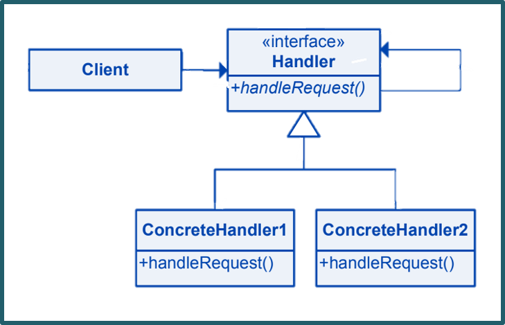

The Chain of Responsibility pattern is a design pattern in software engineering that allows a series of objects to handle a request progressively. It decouples the sender of a request from its receiver(s) by allowing multiple objects to process the request in a chain until it's handled or reaches the end of the chain. It's used to achieve flexibility in handling requests without coupling the sender to specific receiver implementations.Learn more.
Key Characteristics
Key characteristics of the chain of the responsibility pattern include:
Handler Interface: The pattern defines a common interface for all handlers in the chain, ensuring they have a handle_request method to process incoming requests.
Concrete Handlers: Concrete classes that implement the handler interface. Each handler decides whether to process the request or pass it along the chain.
Successor: Each handler in the chain holds a reference to its successor (next handler) in the chain. If the current handler can't process the request, it forwards it to the successor.
Responsibility: Each handler has a specific responsibility, and the chain's structure determines the order in which handlers are invoked.
Client: The client creates the chain and initiates the request, typically starting with the first handler in the chain.
Class Diagram

Example
A real-world example of the Chain of Responsibility pattern can be found in software frameworks that implement event handling, such as user interfaces. Consider a graphical user interface where various UI elements (buttons, checkboxes, etc.) can respond to user interactions like clicks. The Chain of Responsibility pattern can be applied to handle these events in a systematic way.